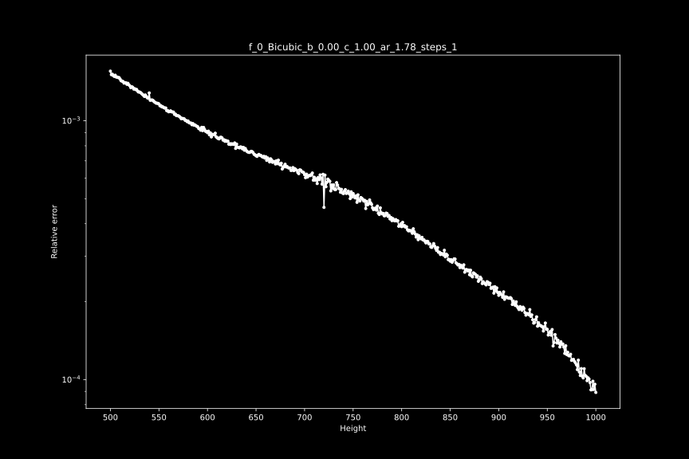

解放缩 Descaling
如果你读过一些关于动漫编码的文章，你可能听说过 "解放缩"这个词；这是一个通过找到原始分辨率和使用的调整内核来 "逆转 "升频的过程。 如果操作正确，这是一个近乎无损的过程，并产生比标准 Spline36 调整大小更清晰的输出，并减少光晕伪影。 然而，如果做得不对，这只会增加已经存在的问题，如光晕、振铃等。
最常用的反比例插件是Descale，它最容易通过fvsfunc调用，它对每个内核都有一个别名，例如fvf.Debilinear。
这支持双曲线、双线性、兰佐斯和样条曲线的升尺度。
大多数数字制作的动漫内容，特别是电视节目，都是由720p、810p、864p、900p或介于两者之间的双线性或双立方体升格而成。 虽然不是只有动漫可以做，但它在此类内容中更为普遍，所以我们将相应地关注动漫。
作为我们的例子，我们将看看Nichijou，它是一个从720p的双线升级。
为了展示解放缩的效果，让我们把它与标准的样条调整尺寸进行比较:
descale = fvf.Debilinear(src, 1280, 720)
spline = src.resize.Spline36(1280, 720)
out = core.std.Interleave([descale, spline])
原生分辨率和内核
现在，当你想降级时，你需要做的第一件事是弄清楚用什么来调整视频的大小，以及从哪个分辨率来调整大小。 这方面最流行的工具是getnative，它允许你给它提供一张图片，然后它将对其进行降级、调整大小，并计算出与来源的差异，然后绘制出结果，这样你就可以找到原始分辨率。
为了使其发挥最大的作用，你要找到一个明亮的画面，并有非常少的模糊、视觉效果、纹理等。
一旦你找到了一个，你就可以按以下方式运行脚本:
python getnative.py image.png -k bilinear
这将在Results目录下输出一个图形，并猜测其分辨率。
不过，自己看一下这个图是很有必要的。
在我们的例子中，这些是正确的参数，所以我们得到以下结果。

在720p时有一个明显的下降。 我们还可以测试其他内核:
python getnative.py image.png -k bicubic -b 0 -c 1
然后，该图看起来如下:

如果你想测试所有可能的内核，你可以使用--mode "all"。
为了仔细检查，我们将输入的帧与用相同内核放大的解放缩进行比较:
descale = fvf.Debilinear(src, 1280, 720)
rescale = descale.resize.Bilinear(src, src.width, src.height)
merge_chroma = rescale.std.Merge(src, [0, 1])
out = core.std.Interleave([src, merge_chroma])
在这里，我们将源头的色度与我们的重新缩放合并起来，因为色度的分辨率比源头的分辨率低，所以我们不能降低它的比例。 结果:
正如你所看到的，线性图实际上是相同的，没有引入额外的光晕或混叠。
另一方面，如果我们尝试一个不正确的内核和分辨率，我们会在重新缩放的图像中看到更多的伪影:
b, c = 0, 1
descale = fvf.Debicubic(src, 1440, 810, b=b, c=c)
rescale = descale.resize.Bicubic(src, src.width, src.height, filter_param_a=b, filter_param_b=c)
merge_chroma = rescale.std.Merge(src, [0, 1])
out = core.std.Interleave([src, merge_chroma])
混合分辨率
上面关于不正确的内核和高度的例子应该很明显，不正确的解放缩是相当有破坏性的。 不幸的是，大多数可以被降级的视频都有其他分辨率的元素。 有时，一帧中的不同元素会有不同的分辨率，例如，背景是900p的，人物A是810p的，人物B是720p的。 在这样的情况下，通常做一个简单的 spline36 调整大小是比较安全的。 从技术上讲，人们可以做大量的遮罩来解决这个问题，但这是一个很大的努力，而且遮罩很可能会失败。
一个更常见的会遇到混合分辨率的情况是片头和叠加，这通常是1080p的。 让我们来看看，如果我们在上面的画面中添加一些文字，并将其与 spline36 调整进行对比，会发生什么。 为了便于比较，这些图片被放大了3倍:
去线性调整在这里明显增加了更强的光晕伪影。
为了处理这个问题，我们可以使用fvsfunc中的DescaleM函数，它掩盖了这些元素，并通过 spline36 调整它们的大小。
descale = fvf.DebilinearM(src, 1280, 720)
由于这些函数相对较慢，你可能要考虑事先找到这些元素，并只对这些帧应用该函数。 如果你不确定你的帧没有1080p元素，但还是坚持使用这些函数。
另外，在非常罕见的情况下，分辨率和/或内核会逐个场景变化，甚至更糟，逐个帧变化。
你可以考虑试试lvsfunc.scale.descale，它试图为每一帧找到理想的高度。
然而，理想的情况是，你应该手动完成这个工作。